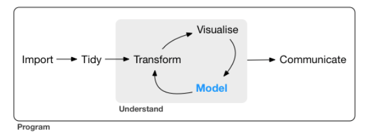
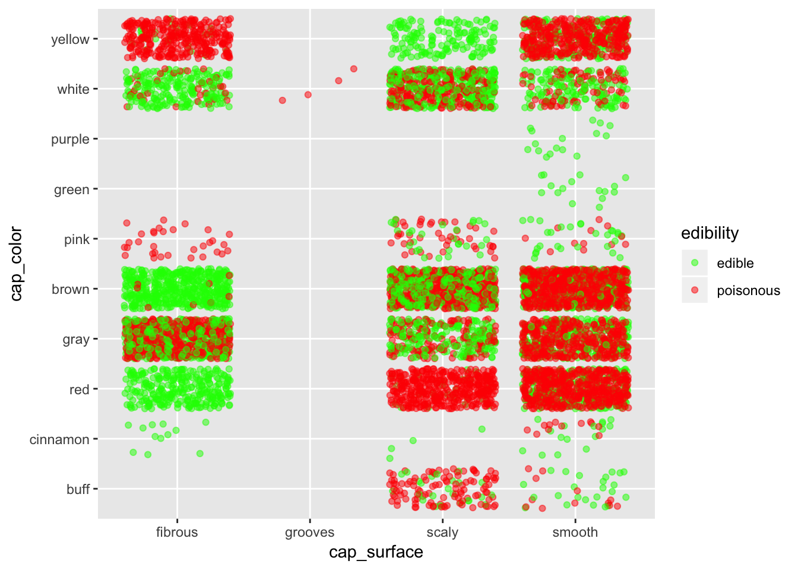
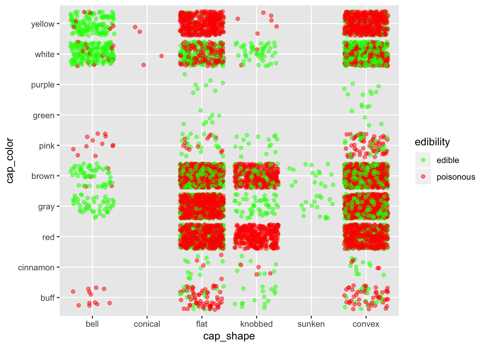
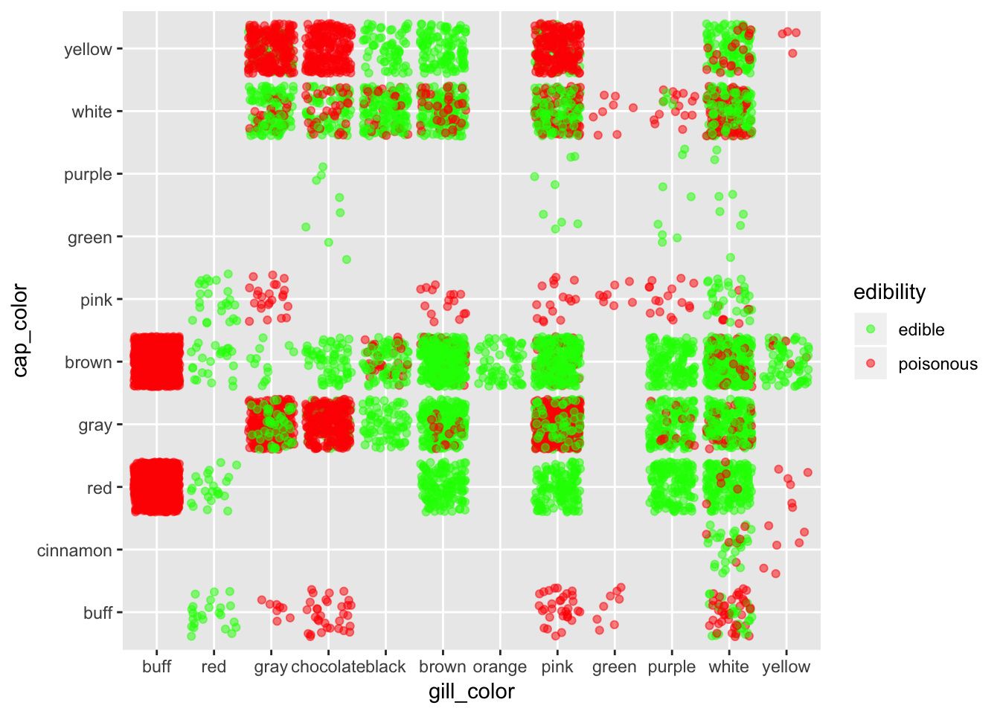
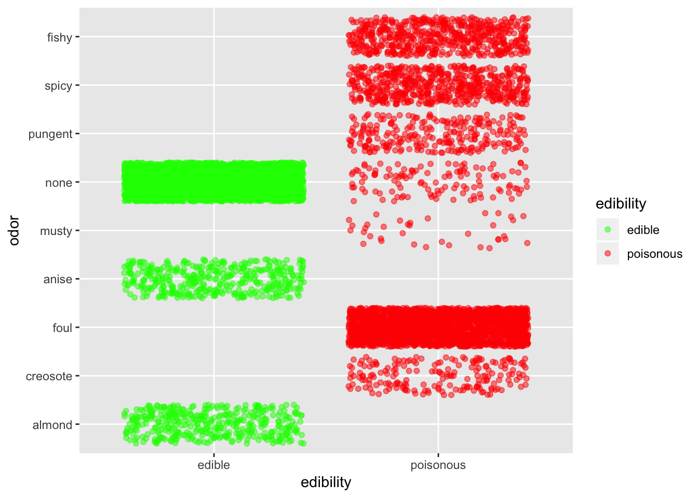
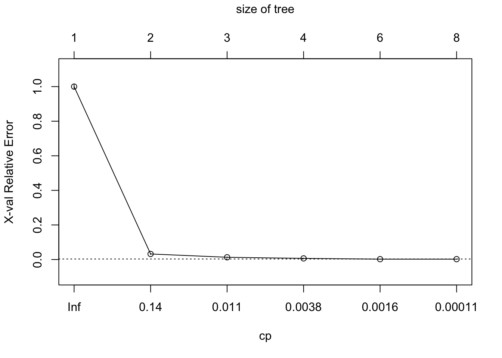
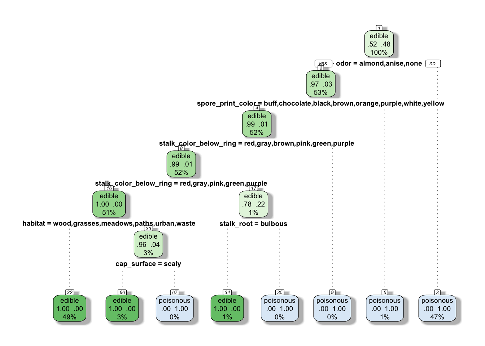
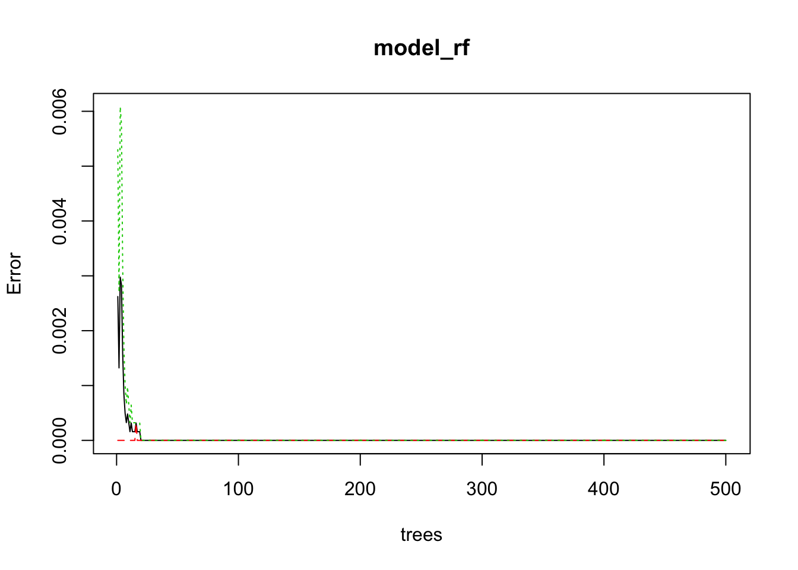
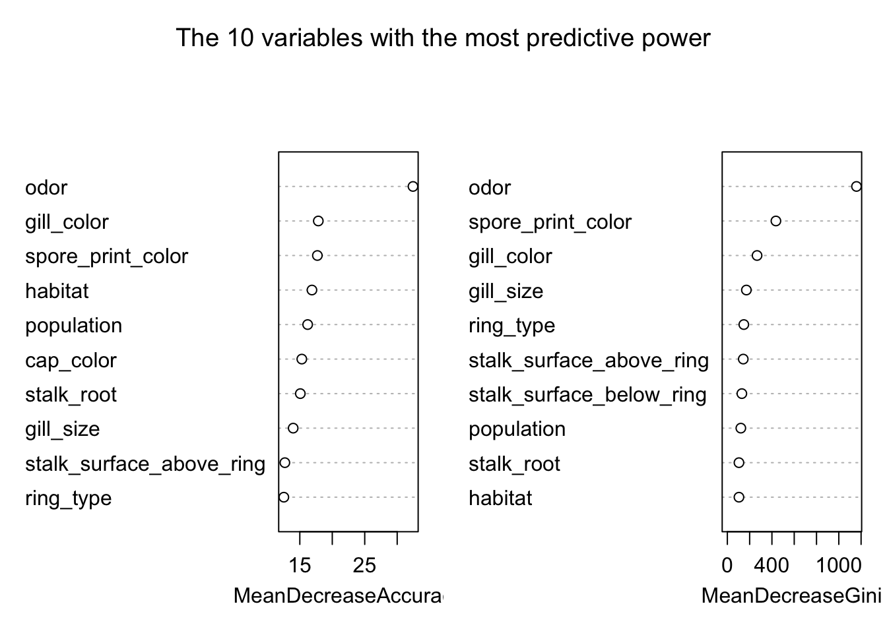

Chapter 16 Case Study - Mushrooms Classification
This example demonstrates how to classify muhsrooms as edible or not. It also answer the question: what are the main characteristics of an edible mushroom?
This blog post gave us first the idea and we followed most of it. We also noticed that Kaggle has put online the same data set and classification exercise. We have taken inspiration from some posts here and here
The data set is available on the Machine Learning Repository of the UC Irvine website.
16.1 Import the data
The data set is given to us in a rough form and quite a bit of editing is necessary.
# Load the data - we downloaded the data from the website and saved it into a .csv file
mushroom <- read_csv("dataset/Mushroom.csv", col_names = FALSE) ## Warning: 210 parsing failures.
## row col expected actual file
## 6039 X7 1/0/T/F/TRUE/FALSE a 'dataset/Mushroom.csv'
## 6041 X7 1/0/T/F/TRUE/FALSE a 'dataset/Mushroom.csv'
## 6376 X7 1/0/T/F/TRUE/FALSE a 'dataset/Mushroom.csv'
## 6425 X7 1/0/T/F/TRUE/FALSE a 'dataset/Mushroom.csv'
## 6435 X7 1/0/T/F/TRUE/FALSE a 'dataset/Mushroom.csv'
## .... ... .................. ...... ......................
## See problems(...) for more details.glimpse(mushroom)## Observations: 8,124
## Variables: 23
## $ X1 <chr> "p", "e", "e", "p", "e", "e", "e", "e", "p", "e", "e", "e", …
## $ X2 <chr> "x", "x", "b", "x", "x", "x", "b", "b", "x", "b", "x", "x", …
## $ X3 <chr> "s", "s", "s", "y", "s", "y", "s", "y", "y", "s", "y", "y", …
## $ X4 <chr> "n", "y", "w", "w", "g", "y", "w", "w", "w", "y", "y", "y", …
## $ X5 <lgl> TRUE, TRUE, TRUE, TRUE, FALSE, TRUE, TRUE, TRUE, TRUE, TRUE,…
## $ X6 <chr> "p", "a", "l", "p", "n", "a", "a", "l", "p", "a", "l", "a", …
## $ X7 <lgl> FALSE, FALSE, FALSE, FALSE, FALSE, FALSE, FALSE, FALSE, FALS…
## $ X8 <chr> "c", "c", "c", "c", "w", "c", "c", "c", "c", "c", "c", "c", …
## $ X9 <chr> "n", "b", "b", "n", "b", "b", "b", "b", "n", "b", "b", "b", …
## $ X10 <chr> "k", "k", "n", "n", "k", "n", "g", "n", "p", "g", "g", "n", …
## $ X11 <chr> "e", "e", "e", "e", "t", "e", "e", "e", "e", "e", "e", "e", …
## $ X12 <chr> "e", "c", "c", "e", "e", "c", "c", "c", "e", "c", "c", "c", …
## $ X13 <chr> "s", "s", "s", "s", "s", "s", "s", "s", "s", "s", "s", "s", …
## $ X14 <chr> "s", "s", "s", "s", "s", "s", "s", "s", "s", "s", "s", "s", …
## $ X15 <chr> "w", "w", "w", "w", "w", "w", "w", "w", "w", "w", "w", "w", …
## $ X16 <chr> "w", "w", "w", "w", "w", "w", "w", "w", "w", "w", "w", "w", …
## $ X17 <chr> "p", "p", "p", "p", "p", "p", "p", "p", "p", "p", "p", "p", …
## $ X18 <chr> "w", "w", "w", "w", "w", "w", "w", "w", "w", "w", "w", "w", …
## $ X19 <chr> "o", "o", "o", "o", "o", "o", "o", "o", "o", "o", "o", "o", …
## $ X20 <chr> "p", "p", "p", "p", "e", "p", "p", "p", "p", "p", "p", "p", …
## $ X21 <chr> "k", "n", "n", "k", "n", "k", "k", "n", "k", "k", "n", "k", …
## $ X22 <chr> "s", "n", "n", "s", "a", "n", "n", "s", "v", "s", "n", "s", …
## $ X23 <chr> "u", "g", "m", "u", "g", "g", "m", "m", "g", "m", "g", "m", …Basically we have 8124 mushrooms in the dataset. And each observation consists of 23 variables. As it stands, the data frame doesn’t look very meaningfull. We have to go back to the source to bring meaning to each of the variables and to the various levels of the categorical variables.
16.2 Tidy the data
This is the least fun part of the workflow.
We’ll start by giving names to each of the variables, then we specify the category for each variable. It is not necessary to do so but it does add meaning to what we do.
# Rename the variables
colnames(mushroom) <- c("edibility", "cap_shape", "cap_surface",
"cap_color", "bruises", "odor",
"gill_attachement", "gill_spacing", "gill_size",
"gill_color", "stalk_shape", "stalk_root",
"stalk_surface_above_ring", "stalk_surface_below_ring", "stalk_color_above_ring",
"stalk_color_below_ring", "veil_type", "veil_color",
"ring_number", "ring_type", "spore_print_color",
"population", "habitat")
# Defining the levels for the categorical variables
## We make each variable as a factor
mushroom <- mushroom %>% map_df(function(.x) as.factor(.x))
## We redefine each of the category for each of the variables
levels(mushroom$edibility) <- c("edible", "poisonous")
levels(mushroom$cap_shape) <- c("bell", "conical", "flat", "knobbed", "sunken", "convex")
levels(mushroom$cap_color) <- c("buff", "cinnamon", "red", "gray", "brown", "pink",
"green", "purple", "white", "yellow")
levels(mushroom$cap_surface) <- c("fibrous", "grooves", "scaly", "smooth")
levels(mushroom$bruises) <- c("no", "yes")
levels(mushroom$odor) <- c("almond", "creosote", "foul", "anise", "musty", "none", "pungent", "spicy", "fishy")
levels(mushroom$gill_attachement) <- c("attached", "free")
levels(mushroom$gill_spacing) <- c("close", "crowded")
levels(mushroom$gill_size) <- c("broad", "narrow")
levels(mushroom$gill_color) <- c("buff", "red", "gray", "chocolate", "black", "brown", "orange",
"pink", "green", "purple", "white", "yellow")
levels(mushroom$stalk_shape) <- c("enlarging", "tapering")
levels(mushroom$stalk_root) <- c("missing", "bulbous", "club", "equal", "rooted")
levels(mushroom$stalk_surface_above_ring) <- c("fibrous", "silky", "smooth", "scaly")
levels(mushroom$stalk_surface_below_ring) <- c("fibrous", "silky", "smooth", "scaly")
levels(mushroom$stalk_color_above_ring) <- c("buff", "cinnamon", "red", "gray", "brown", "pink",
"green", "purple", "white", "yellow")
levels(mushroom$stalk_color_below_ring) <- c("buff", "cinnamon", "red", "gray", "brown", "pink",
"green", "purple", "white", "yellow")
levels(mushroom$veil_type) <- "partial"
levels(mushroom$veil_color) <- c("brown", "orange", "white", "yellow")
levels(mushroom$ring_number) <- c("none", "one", "two")
levels(mushroom$ring_type) <- c("evanescent", "flaring", "large", "none", "pendant")
levels(mushroom$spore_print_color) <- c("buff", "chocolate", "black", "brown", "orange",
"green", "purple", "white", "yellow")
levels(mushroom$population) <- c("abundant", "clustered", "numerous", "scattered", "several", "solitary")
levels(mushroom$habitat) <- c("wood", "grasses", "leaves", "meadows", "paths", "urban", "waste")Let’s check our changes one last time before diving into in the next phase of our data analysis workflow.
glimpse(mushroom)## Observations: 8,124
## Variables: 23
## $ edibility <fct> poisonous, edible, edible, poisonous, e…
## $ cap_shape <fct> convex, convex, bell, convex, convex, c…
## $ cap_surface <fct> scaly, scaly, scaly, smooth, scaly, smo…
## $ cap_color <fct> brown, yellow, white, white, gray, yell…
## $ bruises <fct> yes, yes, yes, yes, no, yes, yes, yes, …
## $ odor <fct> pungent, almond, anise, pungent, none, …
## $ gill_attachement <fct> attached, attached, attached, attached,…
## $ gill_spacing <fct> close, close, close, close, crowded, cl…
## $ gill_size <fct> narrow, broad, broad, narrow, broad, br…
## $ gill_color <fct> black, black, brown, brown, black, brow…
## $ stalk_shape <fct> enlarging, enlarging, enlarging, enlarg…
## $ stalk_root <fct> equal, club, club, equal, equal, club, …
## $ stalk_surface_above_ring <fct> smooth, smooth, smooth, smooth, smooth,…
## $ stalk_surface_below_ring <fct> smooth, smooth, smooth, smooth, smooth,…
## $ stalk_color_above_ring <fct> purple, purple, purple, purple, purple,…
## $ stalk_color_below_ring <fct> purple, purple, purple, purple, purple,…
## $ veil_type <fct> partial, partial, partial, partial, par…
## $ veil_color <fct> white, white, white, white, white, whit…
## $ ring_number <fct> one, one, one, one, one, one, one, one,…
## $ ring_type <fct> pendant, pendant, pendant, pendant, eva…
## $ spore_print_color <fct> black, brown, brown, black, brown, blac…
## $ population <fct> scattered, numerous, numerous, scattere…
## $ habitat <fct> urban, grasses, meadows, urban, grasses…As each variables is categorical, let’s see how many categories are we speaking about?
number_class <- function(x){
x <- length(levels(x))
}
x <- mushroom %>% map_dbl(function(.x) number_class(.x)) %>% as_tibble() %>%
rownames_to_column() %>% arrange(desc(value))## Warning: Calling `as_tibble()` on a vector is discouraged, because the behavior is likely to change in the future. Use `enframe(name = NULL)` instead.
## This warning is displayed once per session.colnames(x) <- c("Variable name", "Number of levels")
print(x)## # A tibble: 23 x 2
## `Variable name` `Number of levels`
## <chr> <dbl>
## 1 10 12
## 2 4 10
## 3 15 10
## 4 16 10
## 5 6 9
## 6 21 9
## 7 23 7
## 8 2 6
## 9 22 6
## 10 12 5
## # … with 13 more rows16.3 Understand the data
This is the circular phase of our dealing with data. This is where each of the transforming, visualizing and modeling stage reinforce each other to create a better understanding.

16.3.1 Transform the data
We noticed from the previous section an issue with the veil_type variable. It has only one factor. So basically, it does not bring any information. Furthermore, factor variable with only one level do create issues later on at the modeling stage. R will throw out an error for the categorical variable that has only one level.
So let’s take away that column.
mushroom <- mushroom %>% select(- veil_type)Do we have any missing data? Most ML algorithms won’t work if we have missing data.
map_dbl(mushroom, function(.x) {sum(is.na(.x))})## edibility cap_shape cap_surface
## 0 0 0
## cap_color bruises odor
## 0 0 0
## gill_attachement gill_spacing gill_size
## 210 0 0
## gill_color stalk_shape stalk_root
## 0 0 0
## stalk_surface_above_ring stalk_surface_below_ring stalk_color_above_ring
## 0 0 0
## stalk_color_below_ring veil_color ring_number
## 0 0 0
## ring_type spore_print_color population
## 0 0 0
## habitat
## 0Lucky us! We have no missing data.
16.3.2 Visualize the data
This is one of the most important step in the DS process. This stage can gives us unexpected insights and often allows us to ask the right questions.
library(ggplot2)
ggplot(mushroom, aes(x = cap_surface, y = cap_color, col = edibility)) +
geom_jitter(alpha = 0.5) +
scale_color_manual(breaks = c("edible", "poisonous"),
values = c("green", "red"))
If we want to stay safe, better bet on fibrous surface. Stay especially away from smooth surface, except if they are purple or green.
ggplot(mushroom, aes(x = cap_shape, y = cap_color, col = edibility)) +
geom_jitter(alpha = 0.5) +
scale_color_manual(breaks = c("edible", "poisonous"),
values = c("green", "red"))
Again, in case one don’t know about mushroom, it is better to stay away from all shapes except maybe for bell shape mushrooms.
ggplot(mushroom, aes(x = gill_color, y = cap_color, col = edibility)) +
geom_jitter(alpha = 0.5) +
scale_color_manual(breaks = c("edible", "poisonous"),
values = c("green", "red"))
ggplot(mushroom, aes(x = edibility, y = odor, col = edibility)) +
geom_jitter(alpha = 0.5) +
scale_color_manual(breaks = c("edible", "poisonous"),
values = c("green", "red"))
Odor is defintely quite an informative predictor. Basically, if it smells fishy, spicy or pungent just stay away. If it smells like anise or almond you can go ahead. If it doesn’t smell anything, you have better chance that it is edible than not.
TO DO: put a comment on what we see TO DO: put a mosaic graph
16.3.3 Modeling
At this stage, we should have gathered enough information and insights on our data to choose appropriate modeling techniques.
Before we go ahead, we need to split the data into a training and testing set
set.seed(1810)
mushsample <- caret::createDataPartition(y = mushroom$edibility, times = 1, p = 0.8, list = FALSE)
train_mushroom <- mushroom[mushsample, ]
test_mushroom <- mushroom[-mushsample, ]We can check the quality of the splits in regards to our predicted (dependent) variable.
round(prop.table(table(mushroom$edibility)), 2)##
## edible poisonous
## 0.52 0.48round(prop.table(table(train_mushroom$edibility)), 2)##
## edible poisonous
## 0.52 0.48round(prop.table(table(test_mushroom$edibility)), 2)##
## edible poisonous
## 0.52 0.48It seems like we have the right splits.
16.3.3.1 Use of Regression Tree
As we have many categorical variables, regression tree is an ideal classification tools for such situation.
We’ll use the rpart package. Let’s give it a try without any customization.
library(rpart)
library(rpart.plot)
set.seed(1810)
model_tree <- rpart(edibility ~ ., data = train_mushroom, method = "class")
model_tree## n= 6500
##
## node), split, n, loss, yval, (yprob)
## * denotes terminal node
##
## 1) root 6500 3133 edible (0.51800000 0.48200000)
## 2) odor=almond,anise,none 3468 101 edible (0.97087659 0.02912341)
## 4) spore_print_color=buff,chocolate,black,brown,orange,purple,white,yellow 3408 41 edible (0.98796948 0.01203052) *
## 5) spore_print_color=green 60 0 poisonous (0.00000000 1.00000000) *
## 3) odor=creosote,foul,musty,pungent,spicy,fishy 3032 0 poisonous (0.00000000 1.00000000) *caret::confusionMatrix(data=predict(model_tree, type = "class"),
reference = train_mushroom$edibility,
positive="edible")## Confusion Matrix and Statistics
##
## Reference
## Prediction edible poisonous
## edible 3367 41
## poisonous 0 3092
##
## Accuracy : 0.9937
## 95% CI : (0.9915, 0.9955)
## No Information Rate : 0.518
## P-Value [Acc > NIR] : < 2.2e-16
##
## Kappa : 0.9874
## Mcnemar's Test P-Value : 4.185e-10
##
## Sensitivity : 1.0000
## Specificity : 0.9869
## Pos Pred Value : 0.9880
## Neg Pred Value : 1.0000
## Prevalence : 0.5180
## Detection Rate : 0.5180
## Detection Prevalence : 0.5243
## Balanced Accuracy : 0.9935
##
## 'Positive' Class : edible
## We have quite an issue here. 40 mushrooms have been predicted as edible but were actually poisonous. That should not be happening. So we’ll set up a penalty for wrongly predicting a mushroom as edible when in reality it is poisonous. A mistake the other way is not as bad. At worst we miss on a good recipe! So let’s redo our tree with a penalty for wrongly predicting poisonous. To do this, we introduce a penalty matrix that we’ll use as a parameter in our rpart function.
penalty_matrix <- matrix(c(0, 1, 10, 0), byrow = TRUE, nrow = 2)
model_tree_penalty <- rpart(edibility ~ ., data = train_mushroom, method = "class",
parms = list(loss = penalty_matrix))
caret::confusionMatrix(data=predict(model_tree_penalty, type = "class"),
reference = train_mushroom$edibility,
positive="edible")## Confusion Matrix and Statistics
##
## Reference
## Prediction edible poisonous
## edible 3367 0
## poisonous 0 3133
##
## Accuracy : 1
## 95% CI : (0.9994, 1)
## No Information Rate : 0.518
## P-Value [Acc > NIR] : < 2.2e-16
##
## Kappa : 1
## Mcnemar's Test P-Value : NA
##
## Sensitivity : 1.000
## Specificity : 1.000
## Pos Pred Value : 1.000
## Neg Pred Value : 1.000
## Prevalence : 0.518
## Detection Rate : 0.518
## Detection Prevalence : 0.518
## Balanced Accuracy : 1.000
##
## 'Positive' Class : edible
## So introducing a penalty did the job; it gave us a perfect prediction and saves us from a jounrey at the hospital.
Another way to increase the accuracy of our tree model is to play on the cp parameter.
We start to build a tree with a very low cp (that is we’ll have a deep tree). The idea is that we then prune it later.
model_tree <- rpart(edibility ~ ., data = train_mushroom,
method = "class", cp = 0.00001)To prune a tree, we first have to find the cp that gives the lowest xerror or cross-validation error. We can find the lowest xerror using either the printcp or plotcp function.
printcp(model_tree)##
## Classification tree:
## rpart(formula = edibility ~ ., data = train_mushroom, method = "class",
## cp = 1e-05)
##
## Variables actually used in tree construction:
## [1] cap_surface habitat odor
## [4] spore_print_color stalk_color_below_ring stalk_root
##
## Root node error: 3133/6500 = 0.482
##
## n= 6500
##
## CP nsplit rel error xerror xstd
## 1 0.9677625 0 1.0000000 1.0000000 0.01285833
## 2 0.0191510 1 0.0322375 0.0322375 0.00318273
## 3 0.0063837 2 0.0130865 0.0130865 0.00203731
## 4 0.0022343 3 0.0067028 0.0067028 0.00146032
## 5 0.0011171 5 0.0022343 0.0022343 0.00084402
## 6 0.0000100 7 0.0000000 0.0022343 0.00084402We can see here that that the lowest xerror happen at the 5th split.
plotcp(model_tree)
model_tree$cptable[which.min(model_tree$cptable[, "xerror"]), "CP"]## [1] 0.00111714So now we can start pruning our tree with the cp that gives the lowest cross-validation error.
bestcp <- round(model_tree$cptable[which.min(model_tree$cptable[, "xerror"]), "CP"], 4)
model_tree_pruned <- prune(model_tree, cp = bestcp)Let’s have a quick look at the tree as it stands
rpart.plot(model_tree_pruned, extra = 104, box.palette = "GnBu",
branch.lty = 3, shadow.col = "gray", nn = TRUE)
How does the model perform on the train data?
#table(train_mushroom$edibility, predict(model_tree, type="class"))
caret::confusionMatrix(data=predict(model_tree_pruned, type = "class"),
reference = train_mushroom$edibility,
positive="edible")## Confusion Matrix and Statistics
##
## Reference
## Prediction edible poisonous
## edible 3367 0
## poisonous 0 3133
##
## Accuracy : 1
## 95% CI : (0.9994, 1)
## No Information Rate : 0.518
## P-Value [Acc > NIR] : < 2.2e-16
##
## Kappa : 1
## Mcnemar's Test P-Value : NA
##
## Sensitivity : 1.000
## Specificity : 1.000
## Pos Pred Value : 1.000
## Neg Pred Value : 1.000
## Prevalence : 0.518
## Detection Rate : 0.518
## Detection Prevalence : 0.518
## Balanced Accuracy : 1.000
##
## 'Positive' Class : edible
## It seems like we have a perfect accuracy on our training set. It is quite rare to have such perfect accuracy.
Let’s check how it fares on the testing set.
test_tree <- predict(model_tree, newdata = test_mushroom)
caret::confusionMatrix(data = predict(model_tree, newdata = test_mushroom, type = "class"),
reference = test_mushroom$edibility,
positive = "edible")## Confusion Matrix and Statistics
##
## Reference
## Prediction edible poisonous
## edible 841 0
## poisonous 0 783
##
## Accuracy : 1
## 95% CI : (0.9977, 1)
## No Information Rate : 0.5179
## P-Value [Acc > NIR] : < 2.2e-16
##
## Kappa : 1
## Mcnemar's Test P-Value : NA
##
## Sensitivity : 1.0000
## Specificity : 1.0000
## Pos Pred Value : 1.0000
## Neg Pred Value : 1.0000
## Prevalence : 0.5179
## Detection Rate : 0.5179
## Detection Prevalence : 0.5179
## Balanced Accuracy : 1.0000
##
## 'Positive' Class : edible
## Perfect prediction here as well.
16.3.3.2 Use of Random Forest
We usually use random forest if a tree is not enough. In this case, as we have perfect prediction using a single tree, it is not really necessary to use a Random Forest algorithm. We just use for learning sake without tuning any of the parameters.
library(randomForest)
yo <- train_mushroom %>% na.omit()
model_rf <- randomForest(edibility ~ ., data = yo, importance = TRUE)
plot(model_rf)
The default number of trees for the random forest is 500; we just use 50 here. As we can see on the plot, above 20 trees, the error isn’t decreasing anymore. And actually, the error seems to be 0 or almost 0.
The next step can tell us this more accurately.
print(model_rf)##
## Call:
## randomForest(formula = edibility ~ ., data = yo, importance = TRUE)
## Type of random forest: classification
## Number of trees: 500
## No. of variables tried at each split: 4
##
## OOB estimate of error rate: 0%
## Confusion matrix:
## edible poisonous class.error
## edible 3204 0 0
## poisonous 0 3119 0Altough it is not really necessary to this here as we have a perfect prediction, we can use the confusionMatrix function from the caret pacakge.
caret::confusionMatrix(data = model_rf$predicted, reference = yo$edibility ,
positive = "edible")## Confusion Matrix and Statistics
##
## Reference
## Prediction edible poisonous
## edible 3204 0
## poisonous 0 3119
##
## Accuracy : 1
## 95% CI : (0.9994, 1)
## No Information Rate : 0.5067
## P-Value [Acc > NIR] : < 2.2e-16
##
## Kappa : 1
## Mcnemar's Test P-Value : NA
##
## Sensitivity : 1.0000
## Specificity : 1.0000
## Pos Pred Value : 1.0000
## Neg Pred Value : 1.0000
## Prevalence : 0.5067
## Detection Rate : 0.5067
## Detection Prevalence : 0.5067
## Balanced Accuracy : 1.0000
##
## 'Positive' Class : edible
## If we want to look at the most important variable in terms of predicting edibility in our model, we can do that using the Mean Decreasing Gini
varImpPlot(model_rf, sort = TRUE,
n.var = 10, main = "The 10 variables with the most predictive power")
Another way to look at the predictible power of the variables is to use the importance extractor function.
library(tibble)
randomForest::importance(model_rf) %>% data.frame() %>%
rownames_to_column(var = "Variable") %>%
arrange(desc(MeanDecreaseGini)) %>%
head(10)## Variable edible poisonous MeanDecreaseAccuracy
## 1 odor 30.436574 26.782994 32.43429
## 2 spore_print_color 16.503463 15.230632 17.70661
## 3 gill_color 16.918502 11.084504 17.84965
## 4 gill_size 14.710837 11.237952 13.97791
## 5 ring_type 10.034392 11.012375 12.54136
## 6 stalk_surface_above_ring 12.611875 8.426374 12.69786
## 7 stalk_surface_below_ring 9.622701 9.535173 11.04771
## 8 population 12.762067 13.265479 16.20796
## 9 stalk_root 14.574501 11.512201 15.07954
## 10 habitat 15.966251 11.438290 16.86888
## MeanDecreaseGini
## 1 1158.7520
## 2 435.7166
## 3 266.6227
## 4 170.8262
## 5 147.8102
## 6 142.7167
## 7 130.1340
## 8 121.0170
## 9 104.1225
## 10 104.0821We could compare that with the important variables from the classification tree obtained above.
model_tree_penalty$variable.importance %>%
as_tibble() %>% rownames_to_column(var = "variable") %>%
arrange(desc(value)) %>% head(10)## # A tibble: 10 x 2
## variable value
## <chr> <dbl>
## 1 1 848.
## 2 2 804.
## 3 3 504.
## 4 4 501.
## 5 5 454.
## 6 6 450.
## 7 7 171.
## 8 8 118.
## 9 9 98.2
## 10 10 74.7Interestingly gill_size which is the 5th most important predictor in the random forest does not appear in the top 10 of our classification tree.
Now we apply our model to our testing set.
test_rf <- predict(model_rf, newdata = test_mushroom)
# Quick check on our prediction
table(test_rf, test_mushroom$edibility)##
## test_rf edible poisonous
## edible 812 0
## poisonous 0 779Perfect Prediction!
16.3.3.3 Use of SVM
library(e1071)
model_svm <- svm(edibility ~. , data=train_mushroom, cost = 1000, gamma = 0.01)Check the prediction
test_svm <- predict(model_svm, newdata = test_mushroom %>% na.omit())
yo <- test_mushroom %>% na.omit()
table(test_svm, yo$edibility)##
## test_svm edible poisonous
## edible 812 0
## poisonous 0 779And perfect prediction again!
16.4 Communication
With some fine tuning, a regression tree managed to predict accurately the edibility of mushroom. They were 2 parameters to look at: the cpand the penalty matrix. Random Forest and SVM achieved similar results out of the box.
The regression tree approach has to be prefered as it is a lot easier to grasp the results from a tree than from a SVM algorithm.
For sure I will take my little tree picture next time I go shrooming. That said, I will still only go with a good mycologist.